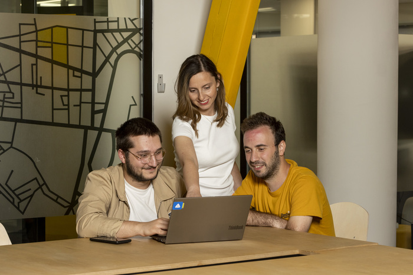

"სულ სხვა შეგრძნებაა, როცა მაღაზიის რიგში დგახარ და უყურებ, ჩვენი ტექ გუნდის დანერგილი ტექნოლოგიით როგორ გაიმარტივეს ადამიანებმა გადახდის პროცესი”, — გიორგი მაევსკი, თიბისის სისტემური ანალიტიკოსი, ტექ გუნდის წევრი.
დღეს მოგიყვებით თიბისის ტექ პროფესიონალებზე, რომლებმაც ტექნიკური სამუშაოები უმოკლეს ვადაში გაწიეს, იმისათვის რომ მომხმარებელს Google Pay-ით ესარგებლა. ამისთვის კი თიბისის გუნდს სულ რაღაც 3 თვე ჰქონდა.
გიორგი მაევსკის თქმით, სამი თვე ამ მასშტაბის პროდუქტის იმპლემენტაციისთვის ძალიან მცირე დროა, თუმცა, გუნდს ამ პროცესში მნიშვნელოვნად დაეხმარა წარსულში, მსგავს პროდუქტებზე (TBC Wallet, Apple Pay) მუშაობის გამოცდილება
"Google-ის მოთხოვნების გაანალიზების და პასუხისმგებლობების გადანაწილების შემდეგ, დავიწყეთ ფიქრი პროდუქტის სამომხმარებლო გამოცდილებაზე (UX). პირველი გამოწვევა იყო UI ნაწილი, რომელზეც Google-ის ინსტრუქციების გათვალისწინებით უნდა გვემუშავა, შემდეგ კი ტექნიკური გადაწყვეტის ამ UI-სთან მორგებაზე უნდა გვეფიქრა. თითოეული ეტაპის გადალახვას სჭირდებოდა Google-ის დასტური".